01
欲しい形を描く
既製品を探すより、欲しいものを欲しい形で。
つくりたいものを、つくれる。
そして、食べられる。
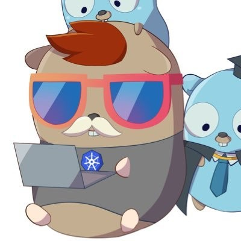
既製品を探すより、欲しいものを欲しい形で。
イラストからSVG、SVGから立体へ。
失敗しても、直してもう一度作れる。
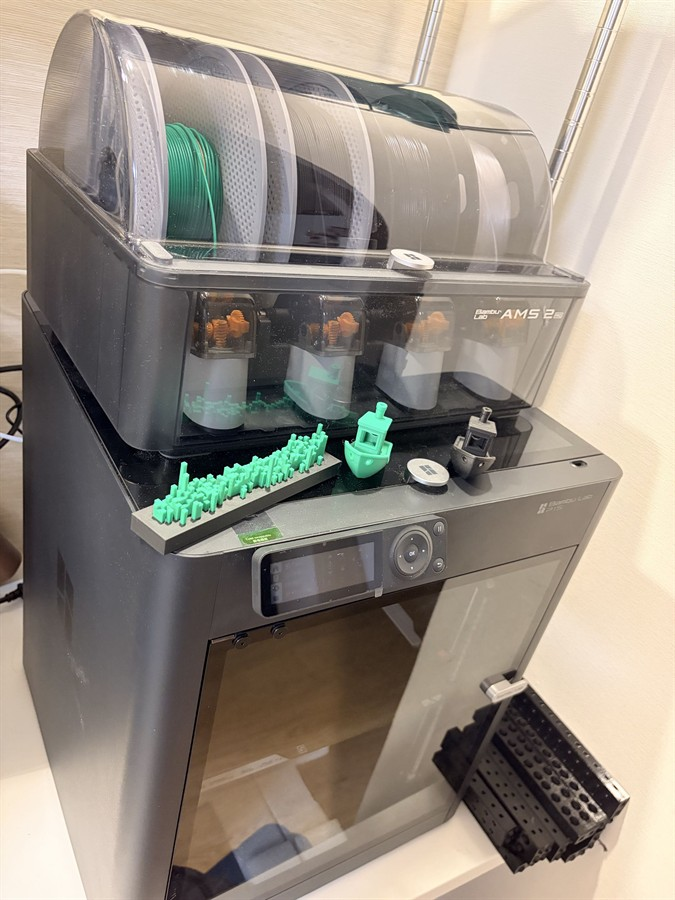
・箱から出して、かなり早く印刷できる
・小さな「こうしたい」をすぐ試せる
・生活の中の道具を、自分仕様にできる
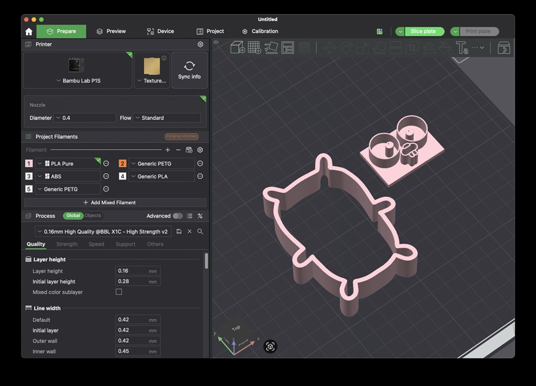
AMSにPLA Pureをセットして印刷扱いやすく、造形の練習に向いているフィラメント。今回は「型」という、小さくて形が大事なものに使いました。
色がきれい。
出力の様子が見やすい。
「素材を選ぶ」体験になる。
Go言語のGopher。
私のTwitterアイコンにもなっているやつです。
「抜く部分」と「残す部分」を決める。
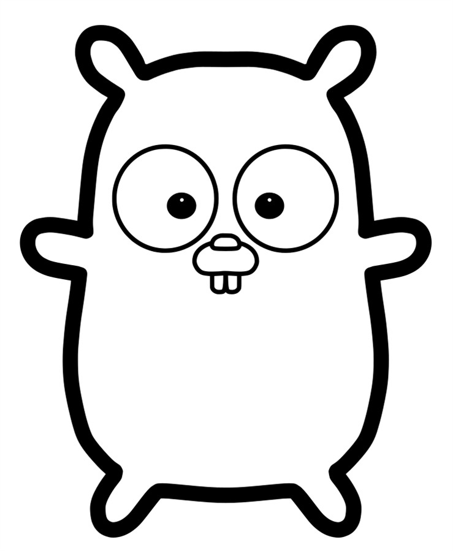
線を、編集できる形にする。
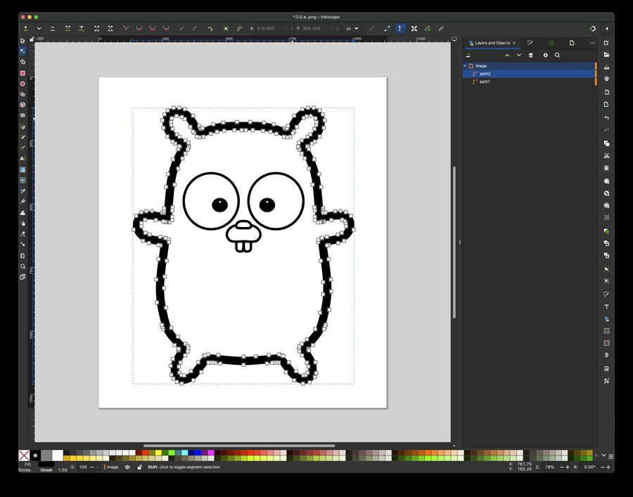
穴、線、つながりをチェック。
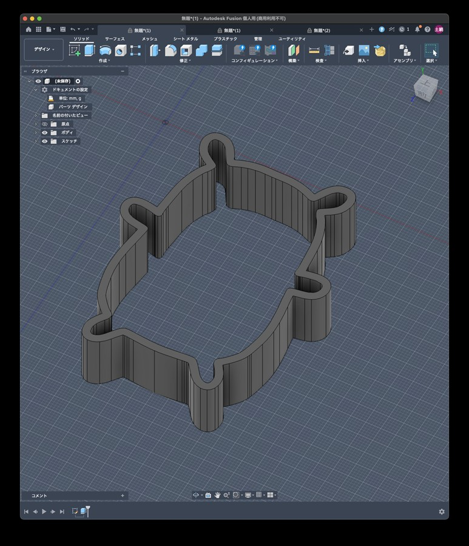
押し出し、厚み、持ち手を足す。
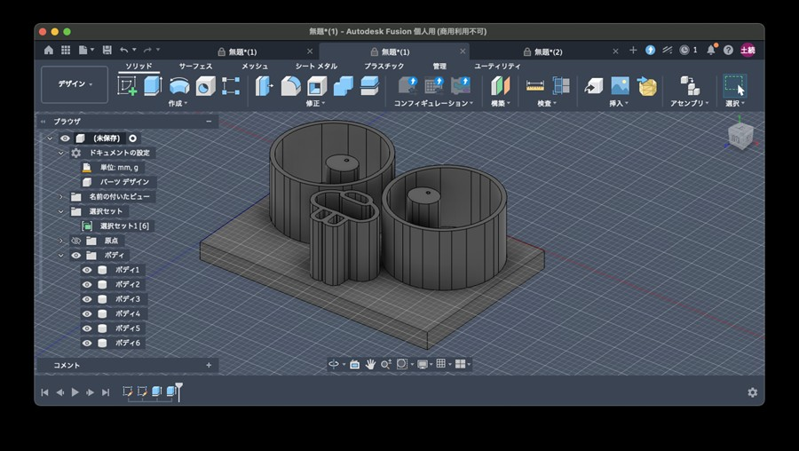
まずは小さく試してみる。
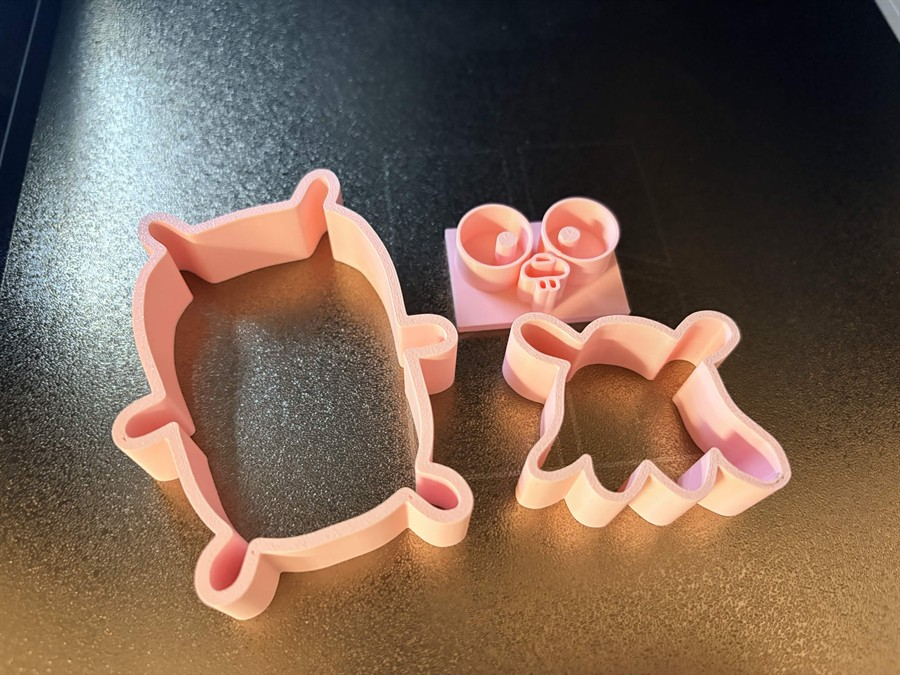
細かいディテールは焼くと埋もれるので、特徴を残しながら大胆に単純化します。
観察：元画像 → 輪郭 → 型の「抜け」
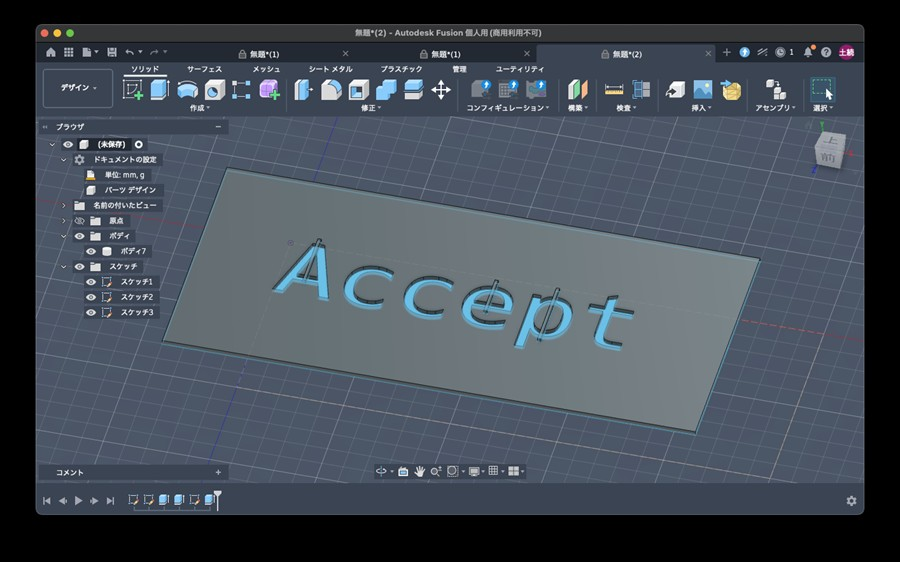
Fusionで文字を入力
型にしたい高さまで押し出す
読める向き、持ち手を確認
印刷！ 文字はすぐ形になる
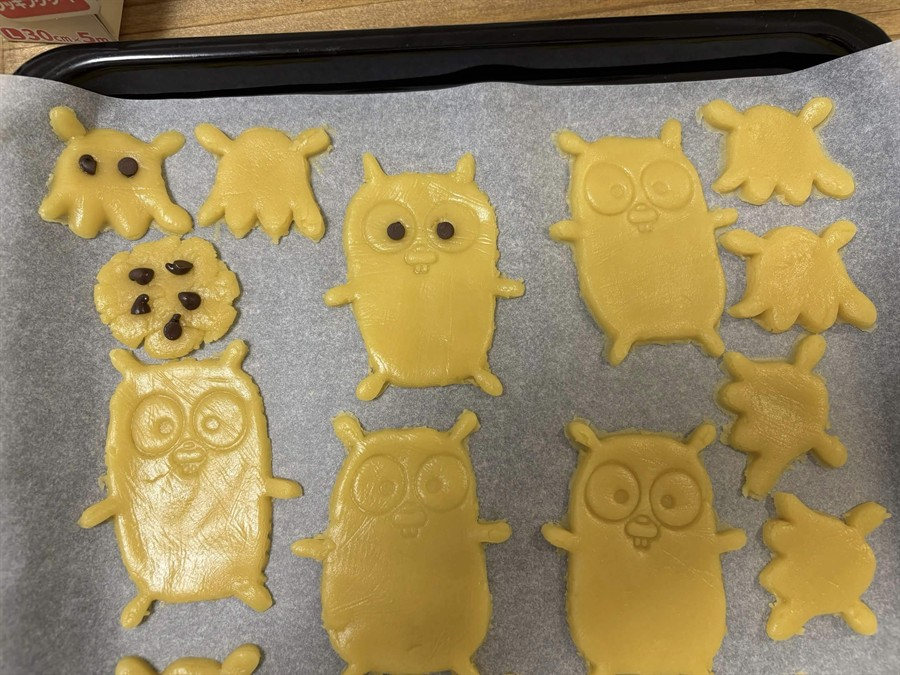
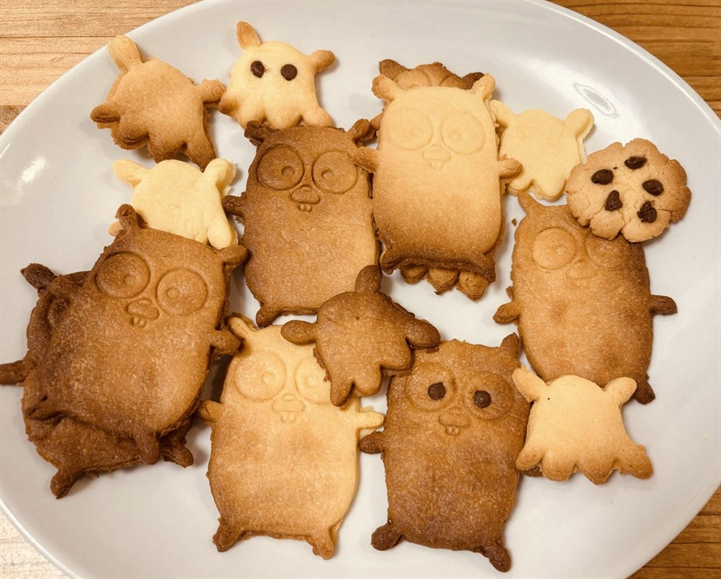
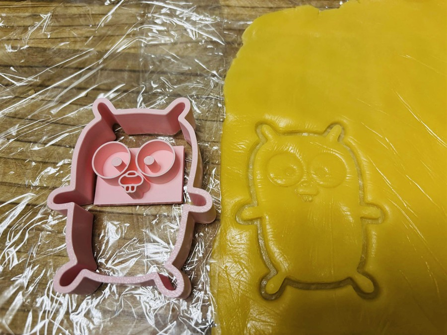
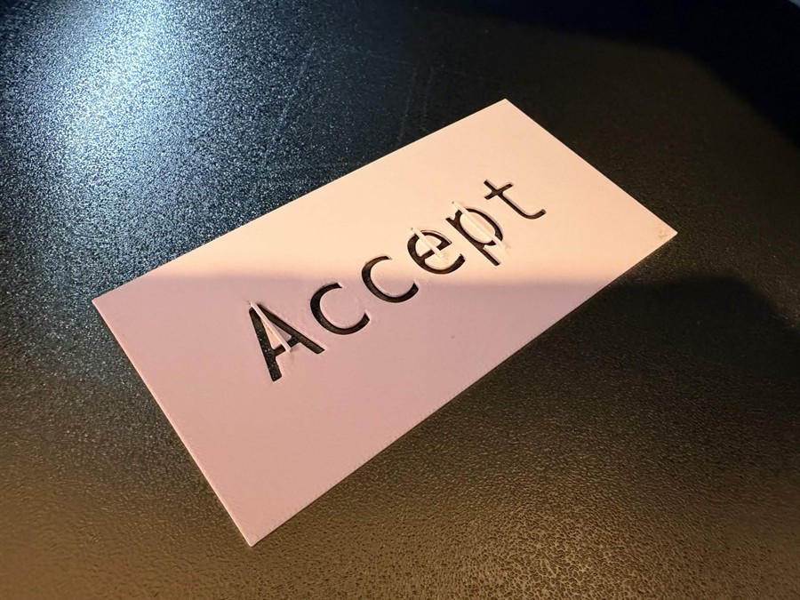
ココアの香りは良い。
でも、見た目は想定していなかった方向へ。
抜きやすさを優先して縁を広くしたら、焼いたときに「羽根」のような余白が生まれました。
反省：使いやすさと、できあがりの見た目は別々に検証する。
次は、何を型にしようかな。